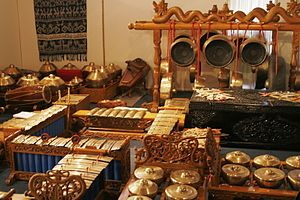

El ritmo, como un recurso fundamental en la visualidad (del griego ῥυθμός rhythmós, ‘cualquier movimiento regular y recurrente’, ‘simetría’), puede definirse generalmente como un «movimiento marcado por la sucesión regular de elementos débiles y fuertes, o bien de condiciones opuestas o diferentes». Es decir, un flujo de movimiento, controlado o medido, sonoro o visual, generalmente producido por una ordenación de elementos diferentes del medio en cuestión.

Se trata de un rasgo básico de todas las artes, especialmente de la música, la poesía y la danza. En música la mayoría de las definiciones tradicionales aluden al ritmo como fuerza dinámica y organizativa de la música. La naturaleza del ritmo es primordialmente subjetiva. La idea de regularidad define el ritmo, pero no es la única ya que una de las primeras definiciones de ritmo en la historia de la música está relacionada con su raíz griega (rheos, fluir), marcando así una relación directa con el movimiento. En efecto, podemos encontrar múltiples definiciones que aúnan movimiento, orden y periodicidad con relación al ritmo musical. Sin embargo, existen definiciones desde el punto de vista de la percepción temporal: ‘el ritmo describe [...] eventos en escalas temporales dentro de los límites de la memoria a corto plazo’. En este sentido, Clarke define el ritmo musical como ‘fenómenos temporales de pequeña y mediana escala’.
En las artes escénicas el ritmo es la cronología de los acontecimientos a escala humana, de los sonidos musicales y los silencios, de los pasos de una danza o la métrica del lenguaje hablado y la poesía. El ritmo también puede referirse a la presentación visual, como ‘el movimiento programado a través del espacio’ y un lenguaje común a modo de patrón que une el ritmo con la geometría. Asimismo, el significado general de ritmo como repetición o patrón regular en el tiempo puede aplicarse a una amplia variedad de fenómenos naturales cíclicos que tienen una periodicidad o frecuencia que puede ir desde microsegundos a millones de años.
Coreografía y elementos de la danza